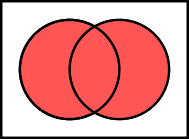
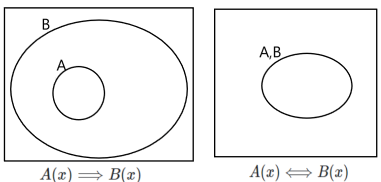

♣ Due Date: Wednesday Oct 16, 2024 at 4 PM. This homework aims at giving you some experience with logical thinking and algebra.
-
Name the three pillars of Science.
Answer:
Experiment, Theory, Computation. -
Name and briefly describe three different applications of Computational and Data Sciences.
Answer:
Predictive modeling, numerical simulation, data-driven modeling. -
Name the two types of scientific reasoning.
Answer:
Deductive and Inductive (plausible) reasoning. -
What is the difference between observational data and reality?
Answer:
Observational data is what we perceive of the nature. Reality is what we will never know because it is always obfuscated with our biases and measurement uncertainties. -
Name the three stages of scientific inference in the prediction pyramid.
Answer:
- Model calibration (training) where we constrain the model parameters to subsequently make predictions using the model,
- Model validation where we validate and confirm the accuracy the calibrated model prediction,
- Model prediction where we predict a quantity of interest based on the validated model.
-
What is a logical proposition?
Answer:
In deductive logic, a proposition is a statement that can be either true or false; it must be one or the other, and it cannot be both. -
Can a logical proposition be simultaneously both true and false in deductive reasoning? (Hint: Explain with an example.)
Answer:
No, take the example proposition I am alive.. It is either true or false but not both simultaneously. -
Does \(A\Rightarrow B\) necessitate \(B \Rightarrow A\)? (Hint: Explain with an example.)
Answer:
No. Set \(A\equiv \text{The sky is rainy}\) and \(B\equiv \text{The sky is cloudy}\). Even though \(A\Rightarrow B\) holds, \(B\Rightarrow A\) may not necessarily hold. -
Represent via a Venn diagram, the logical sum or disjunction of two propositions: \(A + B\)? (Hint: Take \(A\) and \(B\) to be two arbitrary propositions, i.e., circles in the Venn diagram that may partially overlap. Then draw the area that corresponds to \(A + B\).)
Answer:
 -
Represent via a Venn diagram, the logical product or conjunction of two propositions: \(A + B\)? (Hint: Take \(A\) and \(B\) to be two arbitrary propositions, i.e., circles in the Venn diagram that may partially overlap. Then draw the area that corresponds to \(A + B\).)
Answer:

-
Draw a Venn diagram of two propositions \(A\) and \(B\) that corresponds to \(A\Rightarrow B\). (Hint: Recall our class discussion and examples that \(A\Rightarrow B\) means that if \(A\) is true, then \(B\) is true. What configuration of two circles in a Venn diagram corresponding to propositions \(A\) and \(B\) would represent this statement?)
Answer:

Also, refer to the example problem we solved in class. -
Provide an example that shows logical implication does not necessarily imply physical causation.
Answer:
The rain at 10 am is not the physical cause of the clouds at 9:45 am. Nevertheless, the proper logical connection is not in the uncertain causal direction (clouds $\Rightarrow$ rain), but rather (rain $\Rightarrow$ clouds), which is certain, although noncausal. -
Policeman, jewelry, and burglar.
Answer:
\(\begin{eqnarray} A &\equiv& \text{A burglar alarm goes off.} \\ B &\equiv& \text{A gentleman is wearing a mask while crawling out of broken window with a bag full of expensive jewelry.} \\ C &\equiv& \text{Burglary has happened.} \\ \end{eqnarray}\)
If \(A\) is true, and \(B\) is true, then \(C\) is highly plausible. -
Consider the following series of questions:
a. What is the tiniest unit of information?
Hint: This unit also represents the tiniest bit of information in computers.
b. Why does this amount of information represent the tiniest information unit?
Hint: Use inductive logic with examples to explain your reasoning.
Imagine yourself as a single dot in empty space in a universe devoid of anything else.
Would you be able to tell your coordinates in the universe?
or whether you are moving? or at what constant speed?
Why? What extra piece of information do you need to answer the above questions?
c. Let’s assign a box to this tiniest representable amount of information.
Obviously, we cannot represent much information with it. So, our remedy is to put multiple of these boxes to represent information about something.
1. How many different things can we assign to (or represent with) a collection of 1 such boxes?
2. How many different things can we assign to (or represent with) a collection of 2 such boxes?
3. How many different things can we assign to (or represent with) a collection of 3 such boxes?Answer:
a. A bit (which can be true vs. false, or 0 vs. 1).
b. Because a single value does not contain any information. It becomes informative only when it is contrasted with a an opposite value.
A single dot in the universe won’t be able to tell its coordinates or whether it is moving. It needs a reference frame.
A reference point is essential to answer the location and velocity questions.
c. Each box can have only two states. Therefore, 1. One box can represent only one bit of information (two states). 2. Two boxes can represent only two bits of information (four states). 2. Three boxes can represent only three bits of information (eight states).